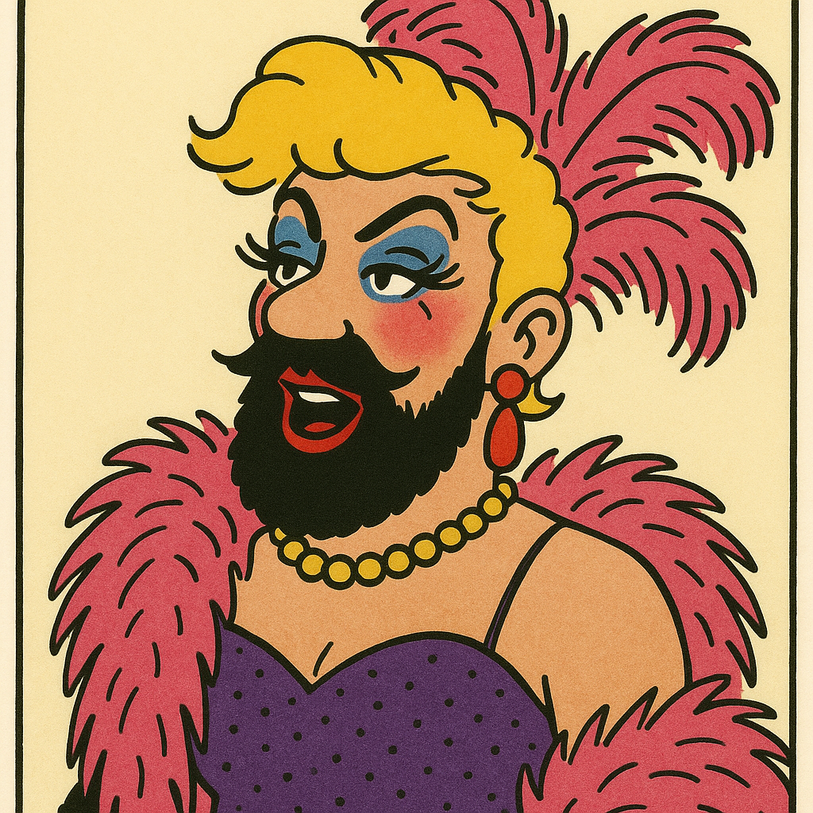

1. Dossiers de référence & paradoxes de la transparence
Les questions s’appuient sur ces trois dossiers transversaux. Tu peux les consulter en entier ou par sections, mais garde toujours en tête le paradoxe transparence ↔ opacité.
Ressources audio / vidéo (à adapter)
Remplace
VIDEO_ID_A_REMPLACER par une vidéo pertinente (ex. reportage sur les conseils communaux filmés).
Remplace
VIDEO_ID_A_REMPLACER par une vidéo pertinente (ex. reportage sur les conseils communaux filmés).
Remplace

VIDEO_ID_A_REMPLACER par une vidéo pertinente (ex. reportage sur les conseils communaux filmés).
Remplace
VIDEO_ID_A_REMPLACER par une vidéo pertinente (ex. reportage sur les conseils communaux filmés).
Remplace PLAYLIST_ID_A_REMPLACER par ta playlist de travail / d’ambiance (débat, discours, instrumentaux).
Galerie d’idées visuelles

Tu peux remplacer ces blocs par de vraies images (cartes, schémas, mindmaps) dès que tu les auras produites.
2. Questions de compréhension (paradoxe transparence / opacité)
Q1. Publicité des séances : le principe de baseDébutant
En t’appuyant sur les dossiers, explique en quelques phrases ce que signifie
le principe de « publicité des séances » pour un conseil communal.
Que garantit-il, en théorie, en termes de transparence ?
Q2. Filmer : transparence ou mise en scène ?Intermédiaire
Quand une commune commence à filmer / streamer ses conseils, qu’est-ce que ça change vraiment ?
Choisis la proposition la plus juste, puis nuance-la.
Q3. Obstacles non techniquesIntermédiaire
Les dossiers insistent sur le fait que les freins au streaming sont rarement techniques.
Liste au moins 3 freins « humains / politiques / culturels » à la transparence réelle des débats.
Q4. Scénarios d’avenir : plus de lumière, plus de brouillard ?Avancé
Les dossiers proposent différents scénarios : pessimiste, intermédiaire, optimiste.
Choisis celui que tu trouves le plus probable et explique :
en quoi il renforce la transparence, et en quoi il peut paradoxalement renforcer l’opacité.
Q5. Charleroi 23/06/2025 : un cas-limiteAvancé
Résume l’affaire de Charleroi (interpellation citoyenne, contexte, slogans, polémique).
Comment ce cas illustre-t-il le paradoxe : « on veut rendre visible le débat » vs
« certains contenus deviennent explosifs / instrumentalisables » ?
Si tu bloques, ce bouton te redonne les grandes lignes sans te mâcher entièrement le travail.
Utilise d’abord les dossiers. Si tu es en difficulté, clique sur « Rappel des points clés » pour
revoir le cœur du paradoxe transparence / opacité.
3. Analyse croisée avec ton projet (cinquième pouvoir & sous-projets)
Ici, tu passes en mode recrutement : comment tu intègres ce paradoxe dans ton propre écosystème (sites, jeux, ARG, veille, pédagogie) ?
Q6. Cinquième pouvoir & “couche de lumière”Avancé
Ton projet vise un « cinquième pouvoir » citoyen.
Explique comment la captation des conseils communaux peut devenir soit :
Q7. Intégrer le paradoxe dans un jeu ou un ARGExpert
Choisis un de tes sous-projets (Godot, ARG, site pédagogique…).
Décris une mécanique de jeu ou un module où :
Q8. Anti-“propagande par le fait” numériqueExpert
En t’inspirant des dossiers sur la propagande par le fait, propose une
« propagande par le fait non violente & transparente » adaptée à ton projet :
une action concrète, visible, documentée, reproductible, qui va dans le sens d’une
transparence réelle (et pas d’un spectacle).
Q9. Dilemme éthique personnelExpert
Imagine que tu mettes en ligne des captations de conseils communaux dans le cadre de ton projet.
Écris ton propre « code éthique » en 4–6 points pour éviter de :
4. Auto-positionnement & export de ton profil
Choisis l’option qui te ressemble le plus après avoir réfléchi aux questions Q6–Q9.
Q10. Ton rôle dans ce paradoxe opacité / transparenceDébutant → Expert
Quand tu te sens prêt·e, clique sur « Obtenir un retour de profil » pour situer ton rôle dans le
paradoxe opacité / transparence. Tu peux ensuite exporter un petit fichier .txt résumant ton test.